Puedes acceder a este santuario desde completar una prueba heroica en la región de la torre del lago. Para activarla debes hablar con Nyel en el Bosque Sigrant.
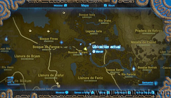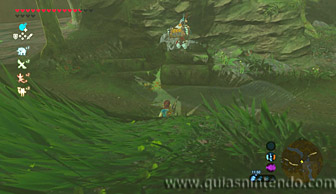
Encontrarás este bosque al oeste del puente en el río Faroria. Después de escuchar su canción se activará la Prueba heroica "Fauces frente a frente".
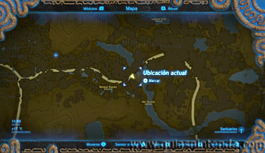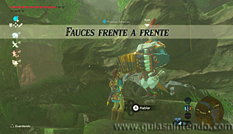
Ahora necesitarás una Escama de Faren. Para conseguirla tendrás que encontrar a la dragona Faren y dispararle una flecha al cuerpo (si le das en la cabeza, cola o garras conseguirás objetos diferentes que ahora no te interesan).
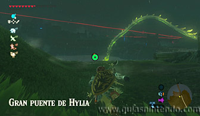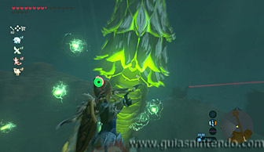
Si le aciertas en el cuerpo, verás como un objeto brillante caerá al suelo. Ve a cogerlo y conseguirás la escama que buscas. Ten en cuenta que solo te dará un objeto cada vez que te lo encuentres (para conseguir otro tendrías que encontrarlo otro día).
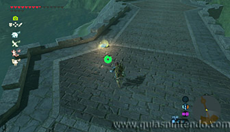
Ahora ve a la Fuente del Valor (situada al suroeste de los Picos Gemelos).
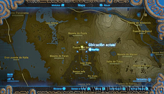
Allí encuentras una estatua a la que puedes rezar. Después coge la escama y deposítala en cualquier lugar del lago.
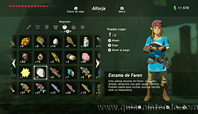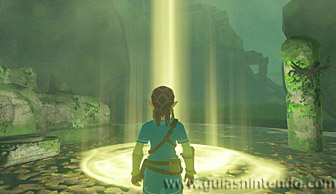
Cuando lo hagas se abrirá la entrada al santuario.
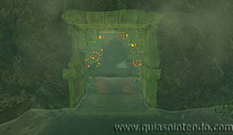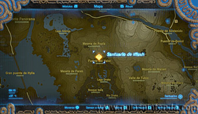
Ahora solo tendrás que abrir el cofre que hay en las escaleras (contiene una Lanza del rayo) antes de alcanzar el altar y obtener un símbolo de valía.
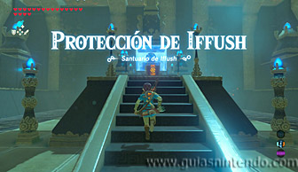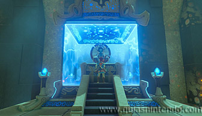